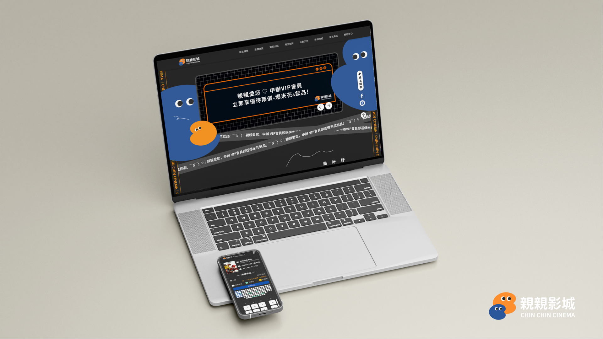
Chin Chin Cinema Rebrand & UX Redesign
VIEW LIVE DEMO ↗為北屯社區型老字號影城「親親影城」重新設計品牌識別與官網體驗，把「櫃檯反覆確認」的購票流程，變成線上就能完成的自助服務。
親親影城官網介面操作不夠直覺、無法線上購票、場次資訊沒有即時更新，會員制度也不透明。我們訪談兩位典型客群——北屯在地媽媽與高中生影迷社社長，發現兩人的痛點高度重疊：光是要確認場次與優惠就得反覆跑櫃檯，也無法提前掌握場次異動。
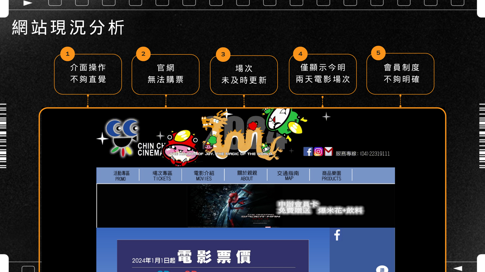
Problem五項痛點（購票效率、會員資料、資訊更新、自由選位、場次選擇）該先解決哪個？
Decision兩組人物誌的最高共同痛點都是「櫃檯來回確認耗時」，我們把「線上購票＋自助選位」訂為第一優先，其餘需求依此展開資訊架構。
Problem舊官網視覺凌亂、缺乏一致品牌識別，跟「社區型、價位親民」的品牌定位不符。
Decision以親密關係為概念重新設計 LOGO（取 CHINCHIN 字首 C 發想），並設計「啾咪家族」吉祥物角色，色彩系統選用柔黃、亮橙、湛藍、清綠，對應溫暖、熱情、專業、輕鬆四種品牌情緒關鍵字。
Problem購票、會員、場次查詢等功能項目多，怎麼避免使用者在主選單迷路？
Decision規劃首頁＋8 大主分類的資訊架構，額外設計常駐懸浮按鈕（快速購票／社群連結／回頂部），降低核心動作（購票）的操作摩擦力。
4 週內完成從研究、人物誌、品牌重塑到線框圖與視覺化設計，並交由團隊完成前端切版與 RWD 製作上線。專案結論聚焦三個效益：網站定位為「品牌形象網站」而不只是購票工具、改善介面提升使用體驗、會員資料線上整合以強化長期經營。
兩組人物誌訪談的痛點高度收斂，讓需求優先序很快有共識，沒有在企劃階段卡關。
品牌識別（LOGO、吉祥物）定案時間偏晚，壓縮了視覺化與切版的作業週期，下次會提早鎖定風格方向。
第一次以 PM 身份協調 5 人小組的企劃、設計、程式三種角色分工，學到怎麼把研究產出轉譯成不同職能都看得懂的規格文件。
從首頁、線上購票、選位選票到會員中心，這是規劃階段產出的線框圖，用來驗證資訊架構與操作流程。
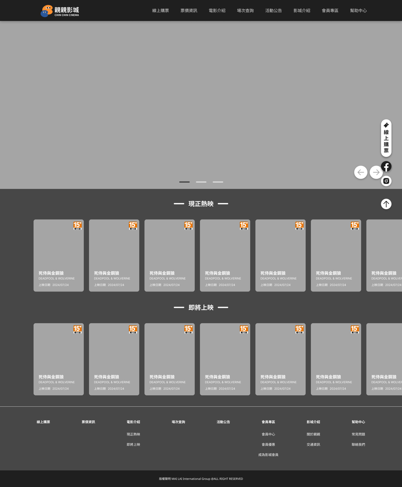
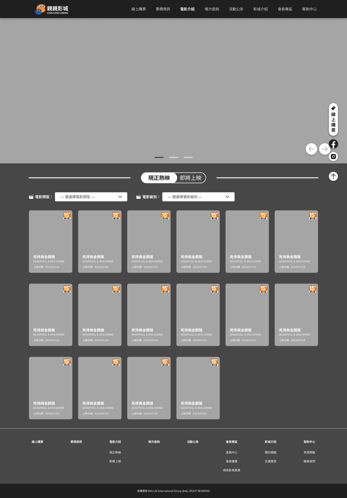
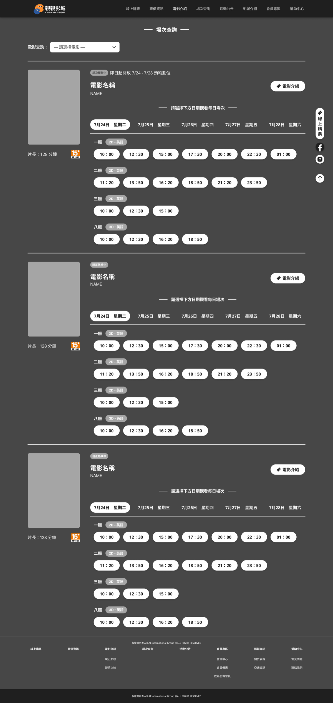
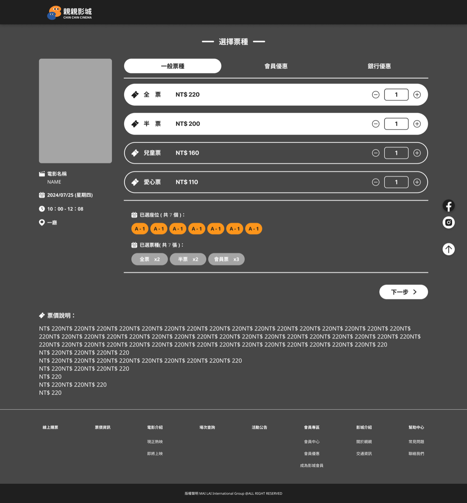
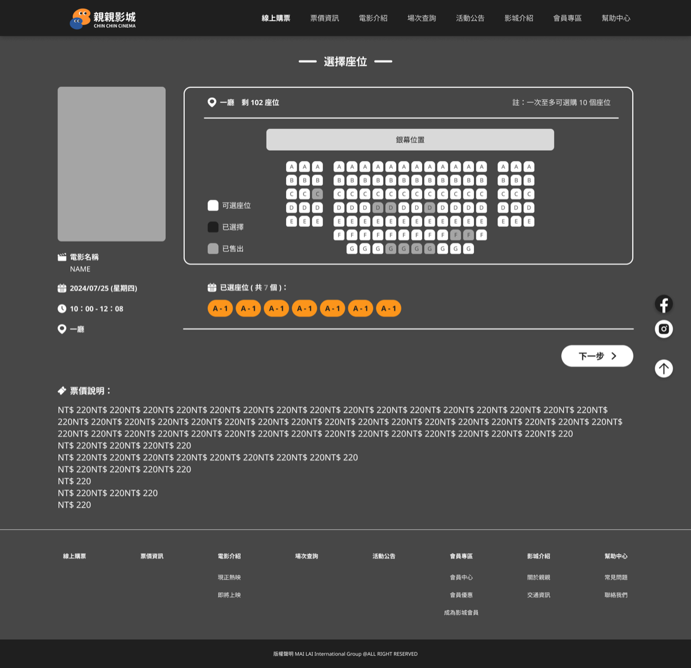
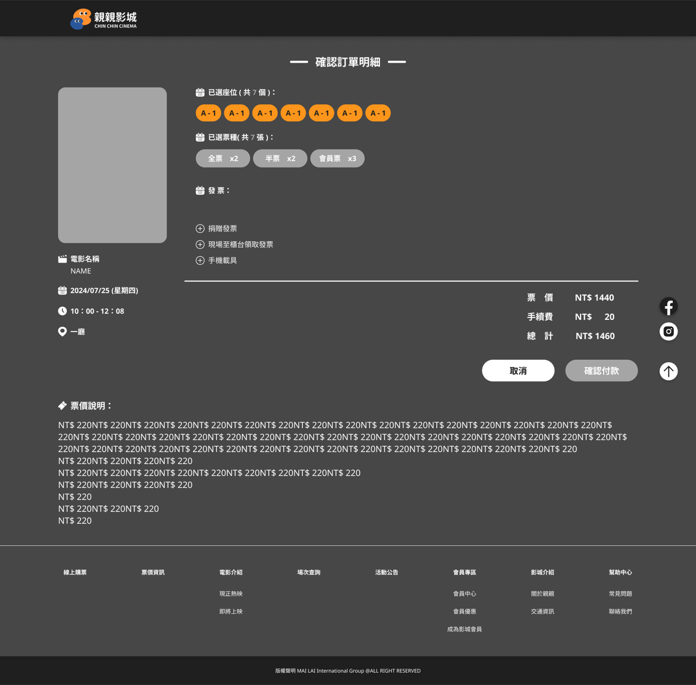
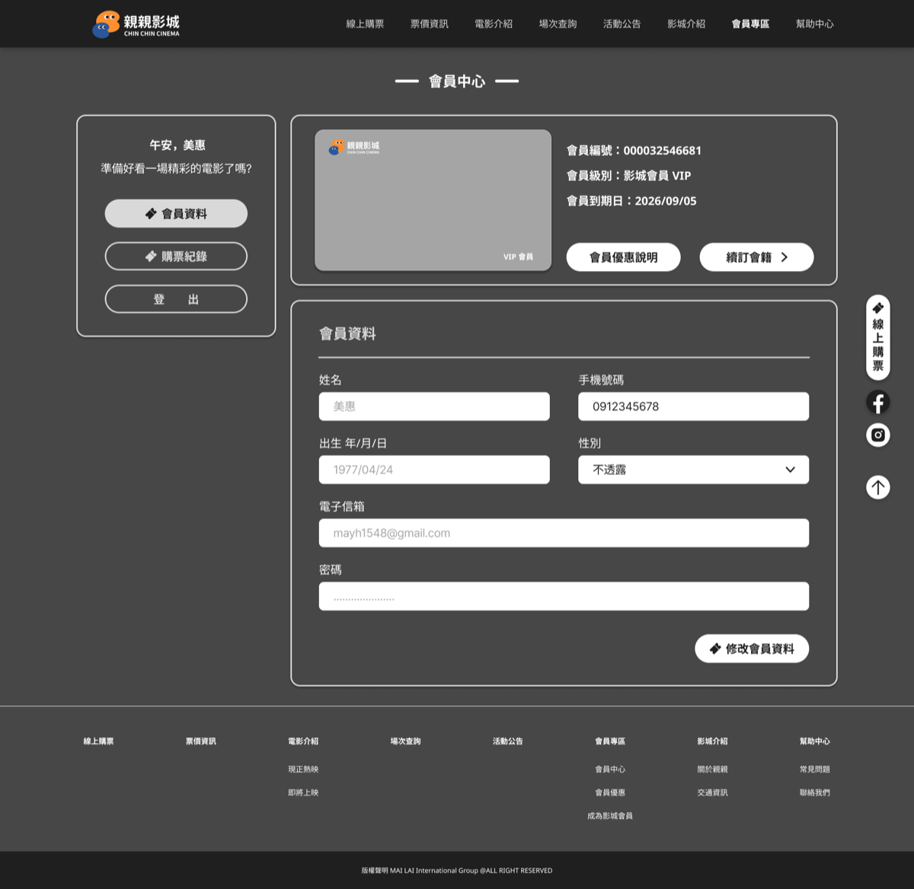
從完整的前台功能地圖，到品牌重塑後的介面拼貼總覽，這是把研究洞察轉譯成可執行規格的過程。
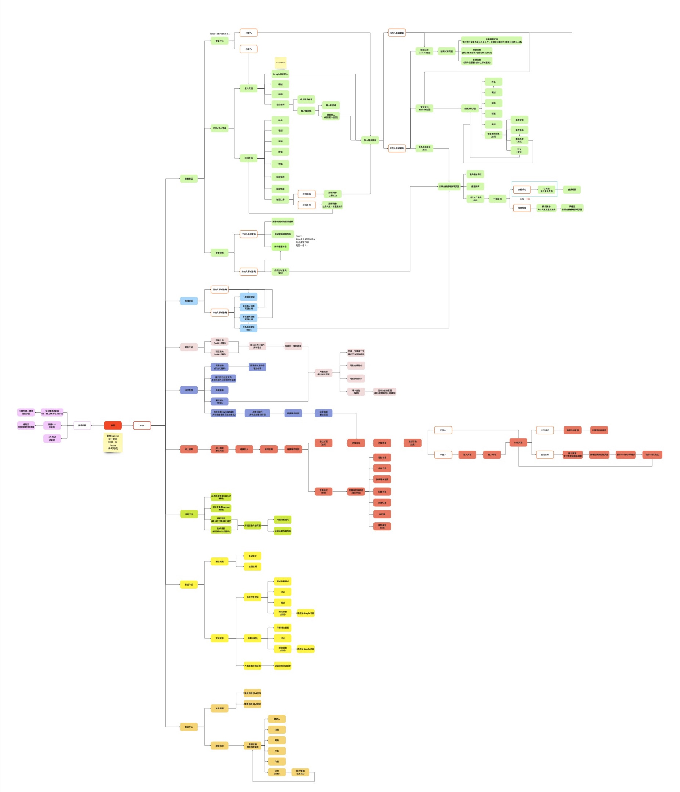
首頁＋8 大主分類的完整功能地圖
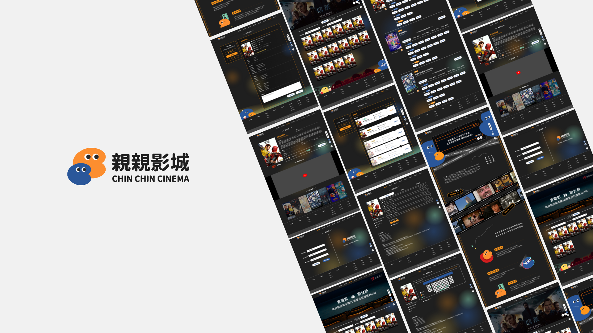
改版後多螢幕介面總覽，由團隊完成視覺化與前端切版